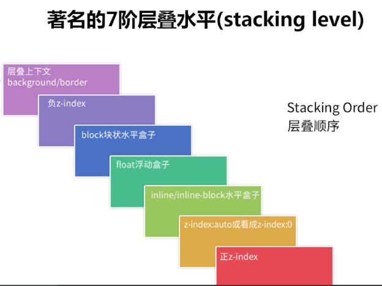

Cascading Style Sheets
Created by Haizhou Chen
Browser

Specificity

Box model


- BFC
- IFC
- FFC
- GFC
SC
How to write?
ThoughtWork
Solution
Progressive Enhancement, Graceful Degradation
.transition {
-webkit-transition: all .5s;
-moz-transition: all .5s;
-o-transition: all .5s;
transition: all .5s;
}
.transition {
transition: all .5s;
-o-transition: all .5s;
-moz-transition: all .5s;
-webkit-transition: all .5s;
}
Mobile first, Desktop first
min-width, max-width
Structural
Concise
Extend
inherit
Pseudo Class
- :link,:visited:hover,:active
- :first-child, last-child, nth-child(n), nth-of-type(n)
- :not, :empty
- :focue, :checked, :enabled, :disabled
PSEUDO ELEMENTS
- ::before
- ::after
- ::first-letter
- ::first-line
Flexibility
- Use %,rem..., (inhert, unset)
- Different(Browsers, Screens, Devices)
Performance
Write order
reflow, repaint
Vilidate
Q & A
- http://www.w3.org/TR/css
- http://www.w3.org/TR/css2
- Can I Use